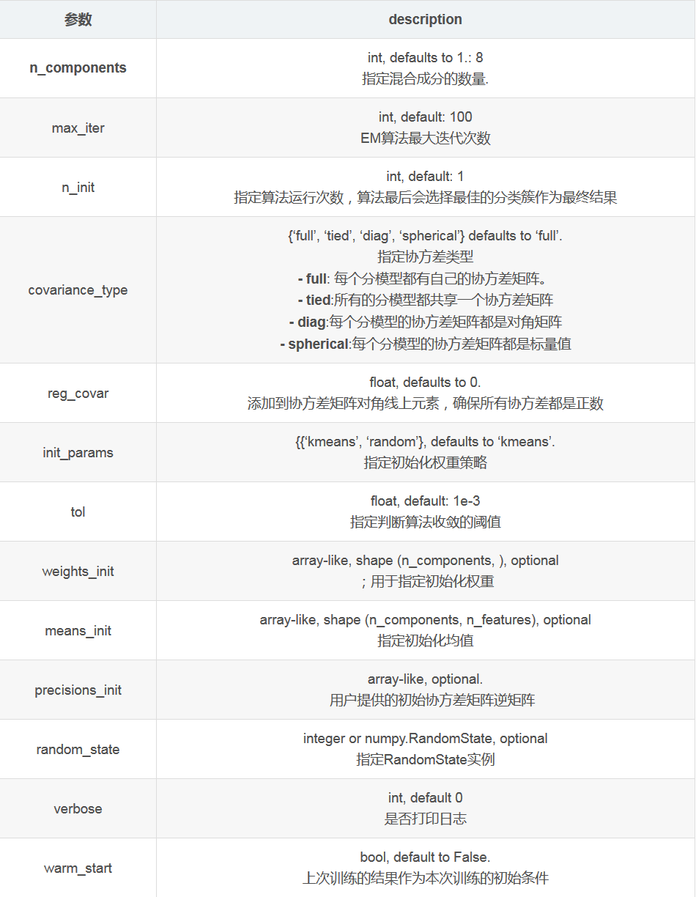
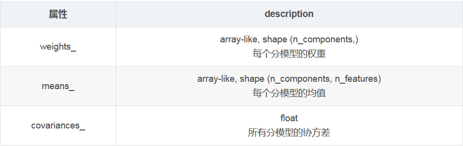
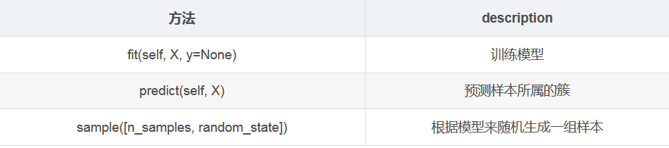
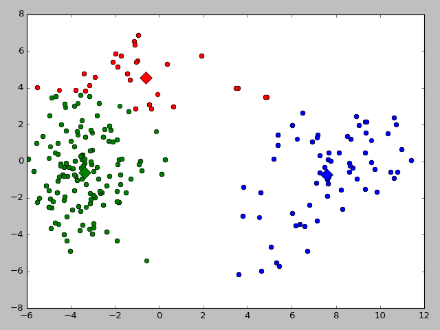
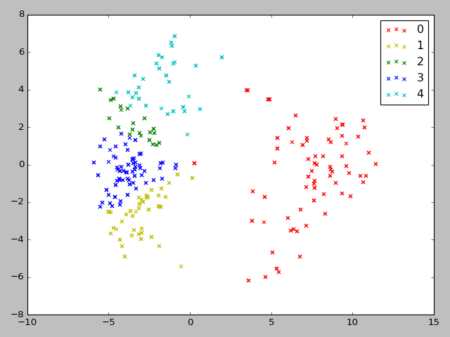

前言
依旧是项目相关，前期调研了文本聚类的方法，现在开始着手实现基于模型的聚类方法，主要包括基于高斯混合模型的EM算法和基于神经网络的SOM算法，下面分别从原理和实现两方面介绍这两种算法。
一 高斯混合模型EM算法
1.1 高斯混合聚类
k-means用原型向量来刻画聚类，高斯混合聚类采用的是概率模型来表达聚类原型。
不一样的参数下，高斯分布如下：
对于多元高斯分布，$n$维样本空间$X$当中的随机向量$x$，概率密度函数为：
$$
p(x|\mu,\Sigma ) = \frac{1}{(2\pi)^{\frac{n}{2}}|\Sigma |^{\frac{1}{2}}}e^{-\frac{1}{2}(x-\mu)^T\Sigma ^{-1}(x-\mu)}
$$
其中μ是n维均值向量，Σ是n×m的协方差矩阵。高斯概率密度函数由μ和Σ两个参数决定.
高斯混合分布为：
$$
f(x) = \sum_{i=1}^k\alpha_ip(x|\mu,\Sigma )
$$
该分布由k个高斯分布混合而成，$\alpha_i$为混合系数，$\alpha_i≥0$且$∑^k_{i=1}α_i=1$.(权重和为1)
为了求解各个权重系数，常用EM算法
1.2 EM算法
1.2.1 抛硬币问题
如果有A和B两个不均匀的硬币，选择任意一个硬币抛10次（这里我们知道选择的是哪一个硬币），共计选择5次。正面记为H，反面记为T，求A和B再抛正面向上的概率？
使用极大似然估计来计算：
- 统计出每次实验，正反面的次数
- 多次实验结果相加
- 相除得到结果，P(A)=0.8,P(B)=0.45
但是在实际过程中，很有可能我们只知道有两个硬币，不知道每次选择的哪一个硬币，问是否能求出每个硬币抛出正面的概率？
这里使用的时EM算法。
- 假设$\hatθ^{(0)}_A=0.6,\hatθ^{(0)}_B=0.5$
- 统计每次的实验结果，记录正反面
- 通过贝叶斯公式，估计每次实验选择的A硬币或是B硬币的概率
- 依据计算出的选择硬币概率得到该概率下的正反面结果
- 相加，相除得到$\hatθ^{(1)}_A≈0.71,\hatθ^{(1)}_B≈0.58$
- 重复上面的过程，例如迭代10次后，得到$\hatθ^{(10)}_A≈0.8,\hatθ^{(10)}_B≈0.52$
- $\hatθ^{(10)}_A,\hatθ^{(10)}_B$就是使用EM算法计算出的概率值
如何用贝叶斯公式计算实验选择是A硬币和B硬币的概率？那么先看下面这个例子：
假如现在有射击运动员甲和乙，甲乙射击靶心的概率为 $\hatθ_甲=0.9，\hatθ_乙=0.2 $，如果现在有一组实验结果为
中，不中，中，中，中，
问这次是谁射击的？
直观上的来看，非常大的概率是甲射击的，但是也有可能是乙走狗屎运了。那么该如何从概率的角度计算是谁射击的？
首先我们知道选择甲和乙的概率为P(甲)=P(乙)=0.5（先验概率）,本次实验记为E。通过贝叶斯公式
$$
\begin{align}
P(甲|E)&= \frac{P(E|甲)P(甲)}{P(E)} \
&= \frac{P(E|甲)P(甲)}{P(E|甲)P(甲)+P(E|乙)P(乙)} \
&= \frac{(0.9^{4}×0.1)×0.5}{(0.9^{4}×0.1)×0.5+(0.2^{4}×0.8)×0.5} \
&≈ 98\% \
\end{align}
$$
故本次实验有98%的可能是A射击的，2%的可能是B射击的。
有了上面的案例，我们再次回到抛硬币的问题上，由贝叶斯公式
$$
P(A|E) = \frac{P(E|A)P(A)}{P(E)}
$$
A为选用硬币A，E为本次实验。而选择两个硬币的概率是相同的：P(A)=P(B)=12
且P(E|A)=0.65×0.45≈0.0008,P(E|B)=$0.5^5×0.5^5$≈0.001
$$
\begin{align}
P(A|E)&= \frac{P(E|A)P(A)}{P(E)} \
&= \frac{P(E|A)P(A)}{P(E|A)P(A)+P(E|B)P(B)} \
&= \frac{(0.6^{5}×0.4^{5})×\frac{1}{2}}{(0.6^{5}×0.4^{5})×\frac{1}{2}+(0.5^{5}×0.5^{5})×\frac{1}{2}}\
&≈0.45 \
\end{align}
$$
有$0.45×10×\frac{1}{2}≈2.2$故第一次实验结果平均下来，有2.2个A硬币正面的可能。同理可得到多次实验的平均结果。
最后相加相除得到新的A,B抛正面估计值$\hat{\theta}_A^{(1)}≈0.71,\hat{\theta}_B^{(1)}≈0.58$这是我们第一次迭代的值，迭代多测得到最终的估测值。
上面我们计算出每次实验中是抛A或抛B的概率值就是隐变量.这个过程就是EM算法的简单案例。
1.3 EM算法实现
# coding:utf8
# 高斯混合模型 使用EM算法解算
# 数据集：《机器学习》--西瓜数据4.0 :文件watermelon4.txt
import numpy as np
import matplotlib.pyplot as plt
import pandas as pd
# 预处理数据
def loadData(filename):
dataSet = []
fr = open(filename)
for line in fr.readlines():
curLine = line.strip().split(' ')
fltLine = list(map(float, curLine))
dataSet.append(fltLine)
print(dataSet)
return dataSet
# 高斯分布的概率密度函数
def prob(x, mu, sigma):
n = np.shape(x)[1]
expOn = float(-0.5 * (x - mu) * (sigma.I) * ((x - mu).T))
divBy = pow(2 * np.pi, n / 2) * pow(np.linalg.det(sigma), 0.5) # np.linalg.det 计算矩阵的行列式
return pow(np.e, expOn) / divBy
# EM算法
def EM(dataMat, maxIter=50):
m, n = np.shape(dataMat)
# 1.初始化各高斯混合成分参数
alpha = [1 / 3, 1 / 3, 1 / 3] # 1.1初始化 alpha1=alpha2=alpha3=1/3
mu = [dataMat[5, :], dataMat[21, :], dataMat[26, :]] # 1.2初始化 mu1=x6,mu2=x22,mu3=x27
sigma = [np.mat([[0.1, 0], [0, 0.1]]) for x in range(3)] # 1.3初始化协方差矩阵
gamma = np.mat(np.zeros((m, 3)))
for i in range(maxIter):
for j in range(m):
sumAlphaMulP = 0
for k in range(3):
gamma[j, k] = alpha[k] * prob(dataMat[j, :], mu[k], sigma[k]) # 4.计算混合成分生成的后验概率，即gamma
sumAlphaMulP += gamma[j, k]
for k in range(3):
gamma[j, k] /= sumAlphaMulP
sumGamma = np.sum(gamma, axis=0)
for k in range(3):
mu[k] = np.mat(np.zeros((1, n)))
sigma[k] = np.mat(np.zeros((n, n)))
for j in range(m):
mu[k] += gamma[j, k] * dataMat[j, :]
mu[k] /= sumGamma[0, k] # 7.计算新均值向量
for j in range(m):
sigma[k] += gamma[j, k] * (dataMat[j, :] - mu[k]).T *(dataMat[j, :] - mu[k])
sigma[k] /= sumGamma[0, k] # 8. 计算新的协方差矩阵
alpha[k] = sumGamma[0, k] / m # 9. 计算新混合系数
# print(mu)
return gamma
# init centroids with random samples
def initCentroids(dataMat, k):
numSamples, dim = dataMat.shape
centroids = np.zeros((k, dim))
for i in range(k):
index = int(np.random.uniform(0, numSamples))
centroids[i, :] = dataMat[index, :]
return centroids
def gaussianCluster(dataMat):
m, n = np.shape(dataMat)
centroids = initCentroids(dataMat, m) # step 1: init centroids
clusterAssign = np.mat(np.zeros((m, 2)))
gamma = EM(dataMat)
for i in range(m):
# amx返回矩阵最大值，argmax返回矩阵最大值所在下标
clusterAssign[i, :] = np.argmax(gamma[i, :]), np.amax(gamma[i, :]) # 15.确定x的簇标记lambda
## step 4: update centroids
for j in range(m):
pointsInCluster = dataMat[np.nonzero(clusterAssign[:, 0].A == j)[0]]
centroids[j, :] = np.mean(pointsInCluster, axis=0) # 计算出均值向量
return centroids, clusterAssign
def showCluster(dataMat, k, centroids, clusterAssment):
numSamples, dim = dataMat.shape
if dim != 2:
print("Sorry! I can not draw because the dimension of your data is not 2!")
return 1
mark = ['or', 'ob', 'og', 'ok', '^r', '+r', 'sr', 'dr', '<r', 'pr']
if k > len(mark):
print("Sorry! Your k is too large!")
return 1
# draw all samples
for i in range(numSamples):
markIndex = int(clusterAssment[i, 0])
plt.plot(dataMat[i, 0], dataMat[i, 1], mark[markIndex])
mark = ['Dr', 'Db', 'Dg', 'Dk', '^b', '+b', 'sb', 'db', '<b', 'pb']
# draw the centroids
for i in range(k):
plt.plot(centroids[i, 0], centroids[i, 1], mark[i], markersize=12)
plt.show()
if __name__=="__main__":
# dataMat = np.mat(loadData('watermelon4.txt'))
dataMat = np.mat(pd.read_pickle('PCA_embedding.pkl'))
centroids, clusterAssign = gaussianCluster(dataMat)
print(clusterAssign.shape)
print(centroids)
showCluster(dataMat, 3, centroids, clusterAssign)输入的特征维度为2
1.4 使用scikit-learn包实现EM算法
scikit提供了GaussianMixture类。构造方法为:
def __init__(self, n_components=1, covariance_type='full', tol=1e-3,
reg_covar=1e-6, max_iter=100, n_init=1, init_params='kmeans',
weights_init=None, means_init=None, precisions_init=None,
random_state=None, warm_start=False,
verbose=0, verbose_interval=10):参数：

属性介绍：

方法介绍

代码
from sklearn import mixture
import matplotlib.pyplot as plt
import numpy as np
import pandas as pd
# 预处理数据
def loadData(filename):
dataSet = []
fr = open(filename)
for line in fr.readlines():
curLine = line.strip().split(' ')
fltLine = list(map(float, curLine))
dataSet.append(fltLine)
return dataSet
def test_GMM(dataMat, components=3,iter = 100,cov_type="full"):
clst = mixture.GaussianMixture(n_components=n_components,max_iter=iter,covariance_type=cov_type)
clst.fit(dataMat)
predicted_labels =clst.predict(dataMat)
return clst.means_,predicted_labels # clst.means_返回均值
def showCluster(dataMat, k, centroids, clusterAssment):
numSamples, dim = dataMat.shape
if dim != 2:
print("Sorry! I can not draw because the dimension of your data is not 2!")
return 1
mark = ['or', 'ob', 'og', 'ok', '^r', '+r', 'sr', 'dr', '<r', 'pr']
if k > len(mark):
print("Sorry! Your k is too large!")
return 1
# draw all samples
for i in range(numSamples):
markIndex = int(clusterAssment[i])
plt.plot(dataMat[i, 0], dataMat[i, 1], mark[markIndex])
mark = ['Dr', 'Db', 'Dg', 'Dk', '^b', '+b', 'sb', 'db', '<b', 'pb']
# draw the centroids
for i in range(k):
plt.plot(centroids[i, 0], centroids[i, 1], mark[i], markersize=12)
plt.show()
if __name__=="__main__":
dataMat = np.mat(pd.read_pickle('PCA_embedding.pkl'))
n_components = 3
iter = 100
cov_types = ['spherical', 'tied', 'diag', 'full']
centroids,labels = test_GMM(dataMat,n_components,iter,cov_types[3])
showCluster(dataMat, n_components, centroids, labels) # 这里labels维度改变了，注意修改showCluster方法1.5 聚类结果

二 基于神经网络的SOM聚类
2.1 自组织映射网络
•网络常分为输入层和竞争层（输出层）：
•输入层：假设一个输入样本为X=[x1,x2,x3,…,xn]，是一个n维向量，则输入层神经元个数为n个。
•竞争层：通常输出层的神经元以矩阵方式排列在二维空间中，每个神经元都有一个权值向量，权值向量维度与输入层样本维度相同。假设输出层有m个神经元，则有m个权值向量。
2.2 算法步骤
- 初始化：初始化竞争层m的数目与m个元素的权值向量
- 输入比较：样本输入网络，通过比较样本与m个权值向量的相似性，记相似性最大的竞争层节点为获胜者
- 调整权值：更新获胜者节点的权值
- 循环迭代：重复2，3
2.3 代码实现
import numpy as np
import pylab as pl
import pandas as pd
class SOM(object):
def __init__(self, X, output, iteration, batch_size):
"""
:param X: 形状是N*D， 输入样本有N个,每个D维
:param output: (n,m)一个元组，为输出层的形状是一个n*m的二维矩阵
:param iteration:迭代次数
:param batch_size:每次迭代时的样本数量
初始化一个权值矩阵，形状为D*(n*m)，即有n*m权值向量，每个D维
"""
self.X = X
self.output = output
self.iteration = iteration
self.batch_size = batch_size
self.W = np.random.rand(X.shape[1], output[0] * output[1])
print (self.W.shape)
def GetN(self, t):
"""
:param t:时间t, 这里用迭代次数来表示时间
:return: 返回一个整数，表示拓扑距离，时间越大，拓扑邻域越小
"""
a = min(self.output)
return int(a-float(a)*t/self.iteration)
def Geteta(self, t, n):
"""
:param t: 时间t, 这里用迭代次数来表示时间
:param n: 拓扑距离
:return: 返回学习率，
"""
return np.power(np.e, -n)/(t+2)
def updata_W(self, X, t, winner):
N = self.GetN(t)
for x, i in enumerate(winner):
to_update = self.getneighbor(i[0], N)
for j in range(N+1):
e = self.Geteta(t, j)
for w in to_update[j]:
self.W[:, w] = np.add(self.W[:,w], e*(X[x,:] - self.W[:,w]))
def getneighbor(self, index, N):
"""
:param index:获胜神经元的下标
:param N: 邻域半径
:return ans: 返回一个集合列表，分别是不同邻域半径内需要更新的神经元坐标
"""
a, b = self.output
length = a*b
def distence(index1, index2):
i1_a, i1_b = index1 // a, index1 % b
i2_a, i2_b = index2 // a, index2 % b
return np.abs(i1_a - i2_a), np.abs(i1_b - i2_b)
ans = [set() for i in range(N+1)]
for i in range(length):
dist_a, dist_b = distence(i, index)
if dist_a <= N and dist_b <= N: ans[max(dist_a, dist_b)].add(i)
return ans
def train(self):
"""
train_Y:训练样本与形状为batch_size*(n*m)
winner:一个一维向量，batch_size个获胜神经元的下标
:return:返回值是调整后的W
"""
count = 0
while self.iteration > count:
train_X = self.X[np.random.choice(self.X.shape[0], self.batch_size)]
normal_W(self.W)
normal_X(train_X)
train_Y = train_X.dot(self.W)
winner = np.argmax(train_Y, axis=1).tolist()
self.updata_W(train_X, count, winner)
count += 1
return self.W
def train_result(self):
normal_X(self.X)
train_Y = self.X.dot(self.W)
winner = np.argmax(train_Y, axis=1).tolist()
print (winner)
return winner
def normal_X(X):
"""
:param X:二维矩阵，N*D，N个D维的数据
:return: 将X归一化的结果
"""
N, D = X.shape
for i in range(N):
temp = np.sum(np.multiply(X[i], X[i]))
X[i] /= np.sqrt(temp)
return X
def normal_W(W):
"""
:param W:二维矩阵，D*(n*m)，D个n*m维的数据
:return: 将W归一化的结果
"""
for i in range(W.shape[1]):
temp = np.sum(np.multiply(W[:,i], W[:,i]))
W[:, i] /= np.sqrt(temp)
return W
#画图
def draw(C):
colValue = ['r', 'y', 'g', 'b', 'c', 'k', 'm']
for i in range(len(C)):
coo_X = [] #x坐标列表
coo_Y = [] #y坐标列表
for j in range(len(C[i])):
coo_X.append(C[i][j][0])
coo_Y.append(C[i][j][1])
pl.scatter(coo_X, coo_Y, marker='x', color=colValue[i%len(colValue)], label=i)
pl.legend(loc='upper right')
pl.show()
#数据集：每三个是一组分别是西瓜的编号，密度，含糖量
if __name__=="__main__":
# data = """
# 1,0.697,0.46,2,0.774,0.376,3,0.634,0.264,4,0.608,0.318,5,0.556,0.215,
# 6,0.403,0.237,7,0.481,0.149,8,0.437,0.211,9,0.666,0.091,10,0.243,0.267,
# 11,0.245,0.057,12,0.343,0.099,13,0.639,0.161,14,0.657,0.198,15,0.36,0.37,
# 16,0.593,0.042,17,0.719,0.103,18,0.359,0.188,19,0.339,0.241,20,0.282,0.257,
# 21,0.748,0.232,22,0.714,0.346,23,0.483,0.312,24,0.478,0.437,25,0.525,0.369,
# 26,0.751,0.489,27,0.532,0.472,28,0.473,0.376,29,0.725,0.445,30,0.446,0.459"""
# a = data.split(',')
dataset = pd.read_pickle('PCA_embedding.pkl')
dataset = np.mat(dataset)
# dataset.astype(float)
# dataset = np.mat([[float(a[i]), float(a[i+1])] for i in range(1, len(a)-1, 3)])
dataset_old = dataset.copy()
print(dataset.shape[1])
som = SOM(dataset, (15, 2), 10, 50)
som.train()
res = som.train_result()
classify = {}
for i, win in enumerate(res):
if not classify.get(win[0]):
classify.setdefault(win[0], [i])
else:
classify[win[0]].append(i)
C = []#未归一化的数据分类结果
D = []#归一化的数据分类结果
for i in classify.values():
C.append(dataset_old[i].tolist())
D.append(dataset[i].tolist())
draw(C)
draw(D)2.4 算法结果
